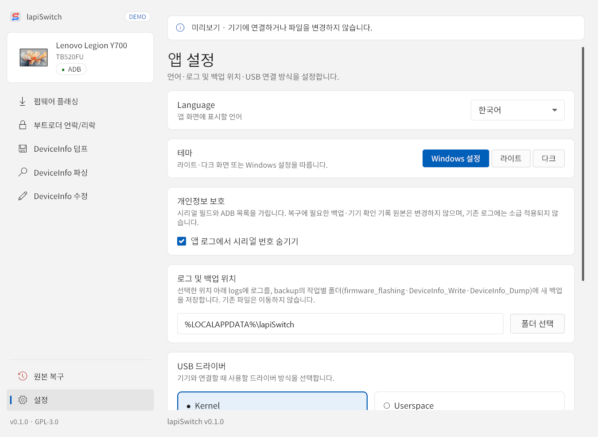

1설정
왼쪽 아래 설정을 누르면 앱 설정이 열립니다.

| 항목 | 설명 |
|---|---|
| Language | 앱 화면 언어. 한국어, English, 简体中文, 日本語, Русский. |
| 테마 | Windows 설정(기본값), 라이트, 다크. |
| 개인정보 보호 | 앱 로그에서 시리얼 번호 숨기기. 시리얼 필드와 ADB 목록을 가립니다. 복구에 필요한 백업과 기기 확인 기록 원본은 바뀌지 않으며, 이미 저장된 로그에는 소급 적용되지 않습니다. |
| 로그 및 백업 위치 | 새 로그는 선택한 위치 아래 logs에, 새 백업은 backup의 작업별 폴더에 저장됩니다. 폴더 선택으로 바꿀 수 있으며 기존 파일은 옮겨지지 않습니다. |
| USB 드라이버 | Kernel(Qualcomm 직렬, 기본값) 또는 Userspace(WinUSB / libusb). 상태 확인, 설치, 업데이트(설치와 드라이버 참고). |
| 오픈소스 라이선스 | 라이선스 보기로 포함된 고지와 라이선스 원문을 오프라인으로 읽을 수 있습니다. |
2백업과 로그 위치
기본 저장 위치는 %LOCALAPPDATA%\lapiSwitch입니다. 탐색기 주소창에 그대로 붙여 넣으면 열립니다.
| 내용 | 하위 경로 |
|---|---|
| 작업 로그 | logs |
| 펌웨어 플래싱 백업 | backup\firmware_flashing |
| DeviceInfo 수정 백업 | backup\DeviceInfo_Write |
| DeviceInfo 덤프 백업 | backup\DeviceInfo_Dump |
| 부트로더 백업 | backup\Bootloader_Unlock, backup\Bootloader_Relock |
| 앱 설정 | preferences.json |
| 작업 기록 (이어하기·원본 복구) | state.json, history |
각 작업 폴더 아래에는 작업마다 <모델>_<날짜>_<시간> 폴더(예: TB520FU_2026-11-11_145301)가 생깁니다. DeviceInfo 관련 파일은 그 안의 Partition 폴더에 저장됩니다.
| 파일 | 내용 |
|---|---|
DeviceInfo\DeviceInfo_original.bin | 쓰기 전에 읽은 원본 DeviceInfo |
DeviceInfo\DeviceInfo_written.bin | 쓴 뒤 다시 읽어 검증한 DeviceInfo |
OriginalRestore\DeviceInfo_before_restore.bin | 원본 복구 직전의 DeviceInfo |
OriginalRestore\DeviceInfo_after_restore.bin | 원본 복구 후 다시 읽은 DeviceInfo |
로그와 백업 위치는 설정에서 바꿀 수 있지만, 앱 설정과 작업 기록은 항상 %LOCALAPPDATA%\lapiSwitch에 남습니다. DeviceInfo 덤프 결과는 덤프 화면에서 고른 저장 위치에 따로 저장됩니다(DeviceInfo 덤프).
- 백업 폴더는 폴더째로 보관하세요. 안의 파일 일부만 옮기면 해시 확인에 실패해 원본 복구가 거부될 수 있습니다.
- 이전 버전 앱으로 만든 백업과 작업 기록은 이 버전에서 열 수 없습니다. 중단된 작업이 있다면 업데이트 전에 그 작업을 만든 버전으로 마치거나 원본 복구를 완료하세요.
- 로그에는 기기 정보가 들어 있습니다. 공유하기 전에 설정의 시리얼 번호 숨기기를 켜 두면 이후 로그에서 시리얼이 가려집니다.
3문제 해결
기기가 인식되지 않아요 (이름이 “—”로 표시돼요)
- 충전 전용이 아닌 데이터 케이블인지, PC 본체 포트에 직접 연결했는지 확인합니다.
- 태블릿에서 USB 디버깅이 켜져 있는지, 허용 창을 승인했는지 확인합니다.
- 드라이버 안내가 보이면 설치하고, 설정 → USB 드라이버에서 드라이버 다시 확인을 누릅니다.
- Software Fix나 다른 ADB 도구가 켜져 있으면 종료합니다.
- EDL 모드에서는 원래 이름과 모델이 “—”로 표시됩니다. 연결 배지가
EDL이면 정상입니다.
메뉴가 흐리게 표시되거나 시작 버튼이 눌리지 않아요
- TB522FU처럼 덤프만 지원하는 기기에서는 쓰기 작업 메뉴가 흐리게 표시됩니다.
- 펌웨어 검사가 실패하면 다음이 비활성화됩니다. 위쪽 메시지를 확인하세요.
- 동의 항목을 체크하고 기기가 연결되어 있어야 시작 버튼이 활성화됩니다. 화면 아래 회색 글씨가 이유를 알려 줍니다.
“롤백 인덱스 경고”가 나와요
롤백 인덱스를 ‘유지’로 두고 더 낮은 인덱스의 펌웨어를 고른 경우입니다. 0으로 초기화 후 계속을 고르거나, 작업을 취소해 원본 구성을 복구한 뒤 같거나 더 높은 인덱스의 펌웨어로 다시 시도하세요(진행 화면).
TWRP나 EDL 연결을 계속 기다려요
- 케이블을 건드리지 말고 잠시 더 기다립니다. 자동 EDL 재진입은 보통 1분 정도 걸립니다.
- 30초가 지나면 작업 중지를 쓸 수 있습니다. 3분 안에 연결되지 않으면 기록을 보존하고 오류로 중단합니다. 이후 이어하기나 원본 복구로 진행합니다(진행 화면).
작업 중에 앱이 꺼졌어요
케이블을 그대로 두고 앱을 다시 실행하세요. 위쪽에 “완료되지 않은 작업이 있습니다”가 나오면 작업 확인을 눌러 이어하기를 진행합니다(이어하기).
원래 리전으로 되돌리고 싶어요
원본 복구는 백업한 GPT·Recovery·vendor_boot와 작업 전 DeviceInfo를 되돌리는 기능이며, 설치된 펌웨어 전체를 예전 버전으로 되돌리지는 않습니다. 반대 방향으로 리전을 바꾸려면 해당 리전의 공식 펌웨어로 다시 펌웨어 플래싱을 진행하는 방법도 있습니다. 어느 쪽이든 지원 조건(준비물과 지원 조건)을 먼저 확인하세요.
문제를 문의하려면 무엇을 보내야 하나요?
결과 화면의 로그 다른 곳에 저장으로 저장한 로그나 logs 폴더의 해당 로그를 첨부하세요. 백업 파일과 DeviceInfo 덤프에는 기기 고유 정보가 들어 있으니 공유하지 마세요.
4크레딧과 라이선스
- LTBox · avbtool-rs — @miner7222: lapiSwitch는 LTBox를 기반으로 만든 독립 도구입니다.
- TWRP — TeamWin · TB520FU 빌드 @wnduddld0513 · TB522FU 빌드 lanweikayu
- 기타 — qdlrs, flag-icons, Noto Sans KR, iced 및 Rust 의존성.
lapiSwitch는 GPL-3.0-or-later로 배포됩니다. 서드파티 구성요소에는 각각의 라이선스가 적용되며, 앱의 설정 → 오픈소스 라이선스 → 라이선스 보기에서 확인할 수 있습니다. 제품명과 상표의 권리는 각 소유자에게 있습니다.
소스 코드와 최신 릴리즈: github.com/corrupt3904/lapiSwitch